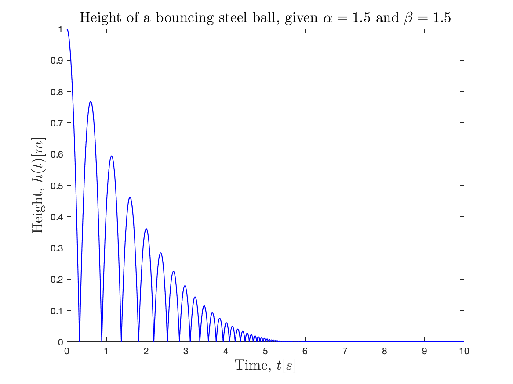
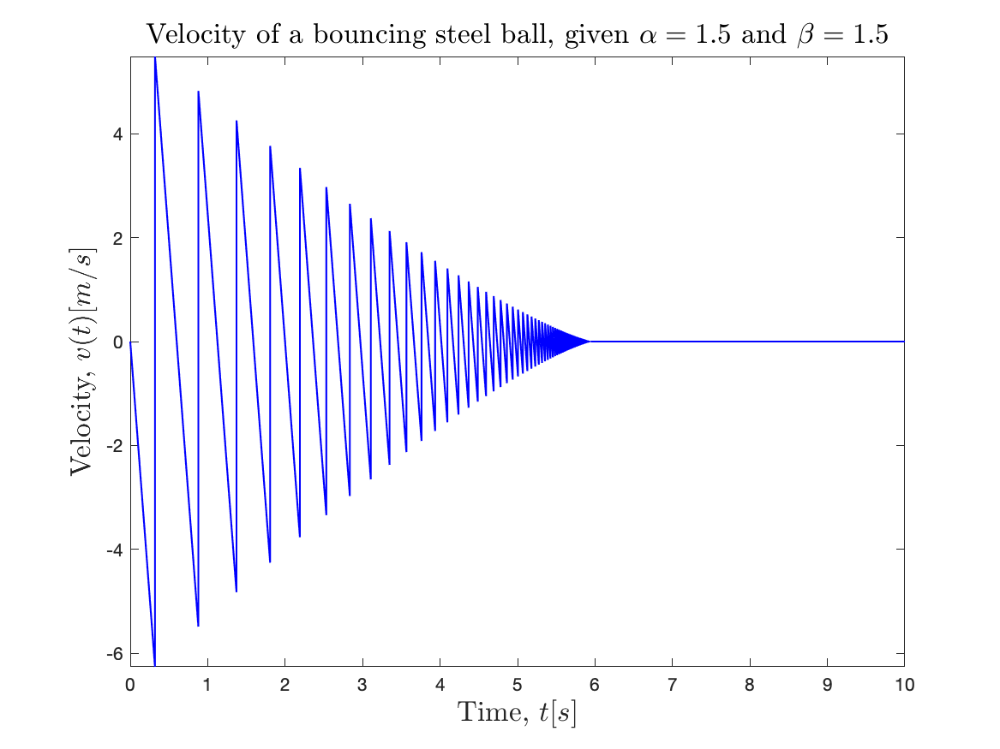
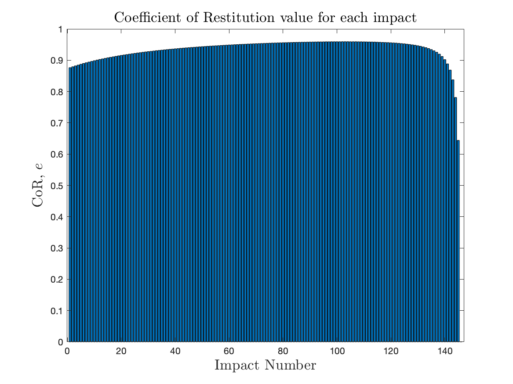

Research
Recent/Current Projects
Coefficient of Restitution Approximation for Spherical Beads with External Load
Nonsmooth contact dynamics approaches are useful for granular dynamics simulation. An important consideration in these applications is the choice of Coefficient of Restitution values that can characterize various behaviors of the granular materials in such simulations. The true Coefficient of Restitution values depend upon several factors, including pre-impact velocities, material properties, and the amount of external load on individual grains. Thus, our work deals with the problem of deriving an approximate analytical Coefficient of Restitution formula that can be used to uniquely compute the Coefficient of Restitution values for each collision based on pre-impact velocity, material properties, and external load values. The spherical bead (or grain) model used for this derivation is pictured below, where \( x(t) \) represents the displacement of the bead, and \( F \) is the magnitude of compressive external load.
In this work, a general nonlinear viscoelastic model is used to derive the approximate Coefficient of Restitution formulation, which leads to the dynamic model, \[ m \ddot{x} (t) = k \left[ {(-x)_+}^{\alpha} + \gamma_0 \frac{d}{dt} {(-x)_+}^{\beta} \right] - mg - F; \hspace{1cm} x(0) = 0, \; \dot{x}(0) = -v_0, \;\;\;\; \alpha,\beta \geq 1, \; \& \; F \geq 0 \] with the physical parameters of mass \( m \), stiffness \( k \), damping ratio \( \gamma_0 \), external load, \(F \), and the nonlinear stiffness and damping term exponents \( \alpha \) and \( \beta \). The dynamics is rescaled in terms of a new time-scale variable \(\tau = t/T \) and a new length-scale variable \( u(\tau) = - \delta x(t) \), that lead to an equivalent dynamics \[ \frac{d^2 u}{d \tau^2} + \gamma \frac{d}{d \tau} (u_+^{\beta}) + u_+^{\alpha} = \tilde{g}; \hspace{.5cm} u(0)=0, \; \frac{d u}{d \tau}(0) = 1;\hspace{.5cm} {\rm with,} \; \gamma = \gamma_0 v_0^{\frac{2 \beta}{\alpha + 1} - 1} {\left(\frac{k}{m} \right)}^{1 - \frac{\beta}{\alpha + 1}} \; {\rm and} \; \tilde{g} = {\left( \frac{m}{k} \right)}^{\frac{1}{\alpha + 1}} v_0^{\frac{-2 \alpha}{\alpha + 1}} \left( g + \frac{F}{m} \right) \] The parameters \( \gamma \) and \( \tilde{g} \) are related to the damping and the magnitude of the external load, respectively. They are also related to the pre-impact velocity of the bead. Thus, using this new set of scaled parameters, this work presents several analytical expansions for the value of the Coefficient of Restitution. The figures below show how well some of the proposed approximations compare against numerical Coefficient of Restitution results for a particular visco-elastic model (Tsuji-Tanaka-Ishida model, \( \alpha = 3/2 \ \ \& \ \ \beta = 5/4 \)), subject to different stiffness, damping, pre-impact velocity and external load conditions.
 |
 |
 |
The various approximations proposed in this study work for a wide class of viscoelastic models ( \( \alpha \geq 1 \ \ \& \ \ \beta \geq 1 \) ) and can be used to calculate the Coefficient of Restitution value for each impact during simulation. The figures below show an example of such a computation for a bouncing ball simulation, where the Coefficient of Restitution is calculated for each impact based on pre-impact velocity, external forces, and other properties, using the proposed approximation (for Kuwabara-Kono model, \( \alpha = \beta = 3/2 \)),
|  |  |  |
The various methods for Coefficient of Restitution computation proposed in this work have been packaged into a MATLAB toolbox and made available (Github and MathWorks File Exchange). A separate C++ implementation as a part of Siconos, would be made available in the near future.
Related Publications
Abhishek Chatterjee, Guillaume James, and Bernard Brogliato. Approximate coefficient of restitution for nonlinear viscoelastic contact with external load. Granular Matter. (Under Review).
Abhishek Chatterjee, Guillaume James, and Bernard Brogliato. Approximate analytical coefficient of restitution formulation for single bead impact with external load, using nonlinear visco-elastic models. INRIA Research Report
Past Projects
Rocking Response of Free-Standing Block subject to Base Motion
This work is an application of our earlier work on planar multi-point rigid contact and impact modeling towards earthquake engineering. The rocking response of free-standing blocks subjected to base motion (seismic loading or otherwise) is of high interest to earthquake engineers, as such studies renders insights on the effects of slenderness on the stabilty of structures when subjected to seismic loading. Earthquake engineers typically study these rocking responses by considering inverted pendulum type model of a block. This work attempts to provide a more realistic model of rocking blocks that considers multiple-point impacts, effects of friction and stick-slip transition.
The videos below show some examples of planar rocking block simulations subjected to base motion.
Related Publications
Abhishek Chatterjee, Rashi Jain and Alan Bowling. Modeling and Simulation of Rocking Block Dynamics subjected to Base Motion using an Energetic Restitution Law. Journal of Earthquake Engineering, pages 1-23, July 2021.
Force Estimation in Rigid Impacts
In our previous work, we have developed models for hard (rigid) collisions, using a non-smooth approach. The impact model developed for rigid body collisions are analyzed in impulse-domain, where the impact states are evolved with respect to a single independent parameter. One drawback of impulse-domain analysis of impacts is that the force and deformation histories during the impact event are lost. The goal of this work was to develop a modeling framework that could retain the force and deformation histories while using an impulse-domain analysis. The approach developed in this work uses a contact mechnaics based force model along with the impulse-domain analysis to determine the force and deformation histories during impacts. This work was done in collaboration with Dr. Matthew Brake of Rice University and Dr. Hamid Ghaednia of Harvard Medical School. The video below shown below demonstrates a simulation result of a ball colliding with three corner walls, where the forces and deformations are being simultaneously evolved along with the post-impact velocities, while treating the collision to be rigid (based on Darboux-Keller model).
Related Publications
Abhishek Chatterjee, Hamid Ghaednia, Alan Bowling and Matthew Brake. Estimation of Impact Forces during Multi-point Collisions involving Small Deformations. Multibody System Dynamics, vol. 51, pages 45-90, January 2021.
Abhishek Chatterjee, Alan Bowling, Hamid Ghaednia and Matthew Brake. Approximate Force History Estimation In Multi-Point Non-Smooth Collisions ASME 2019 International Design Engineering Technical Conferences and Computers and Information in Engineering Conference (IDETC/CIE), August 18-21, 2019. Anaheim, California.
Three-dimensional Rigid Contact and Impact Modeling
The goal of this work was to develop a general framework for modeling three-dinensional frictional contacts and impacts between rigid surfaces. In our earlier work, we have a developed a method for constraining the forces during multi-point contact and impact in planar models, using the property of rigidity. This work uses similar constraints to model surface-to-surface collisions in three-dimensions, by analyzing impacts at number of points representing the surface of a body. One key problem, addressed in this work, is related to the problem of analyzing multi-point stick-slip transition. When one or more contact point(s) enter stick-slip transition, there are two possibilities: contact point(s) may 1) stick or 2) slip-reverse. If a multi-point impact experience slip-reversal, the slip-directions of all contact points reset to new directions. This work presents a method to solve for these unknown slip directions. This work also revisits and generalizes the method of contact constraining planar contacts, for three-dimensional contacts. The animation below shows the simulation results for a rigid ball impacting a corner at three points.
One feature of this method is that for collisions the post-impact velocities are invariant to the number of contact points used in the impact analysis. Hence, any number of points may be used to represent the surface of a rigid body. The animations below compares the simulation results of a rigid block width different number of contact points, where they are being dropped with the same initial conditions.
The proposed modeling technique was also validated againts experimental results of the angular response of a rigid block rocking against the ground. The animations below show the simulated results of the rocking response for three different specimens.
Related Publications
Abhishek Chatterjee and Alan Bowling. Modeling three-dimensional surface-to-surface rigid contact and impact. Multibody System Dynamics, vol. 46, no. 1, pages 1-40, May 2019.
Abhishek Chatterjee and Alan Bowling. Resolving the Unique Invariant Slip-Direction in Rigid Three-Dimensional Multi-Point Impacts at Stick-Slip Transitions. ASME 2018 International Design Engineering Technical Conferences and Computers and Information in Engineering Conference (IDETC/CIE), August 26-29, 2018. Quebec City, Canada.
Abhishek Chatterjee and Alan Bowling. Analysis of Three Dimensional Indeterminate Impacts using Rigid Body Constraints. In Proceedings of the 4th Joint International Conference on Multibody System Dynamics (IMSD), May 29 - June 2, 2016. McGill University, Montreal, Quebec, Canada.
Adrian Rodriguez, Abhishek Chatterjee and Alan Bowling. Solution to three-dimensional indeterminate contact and impact with friction using rigid body constraints. In Proceedings of the ASME 2015 International Design Engineering Technical Conferences and Computers and Information in Engineering Conference (IDETC/CIE), August 2-5, 2015. Boston, Massachusetts, USA.
Planar Rigid Contact and Impact Modeling
This work addressed the problem of modeling planar multi-point contacts and impacts in a rigid body system. Analysis of multipoint collisions often yield an indeterminate problem. In this context, the indeterminacy arises due to the fact that the number of forces (impulses) involved in a multi-point collison is often greater than the number of equations of motion available to solve for them. Hence, this work uses additional constraints based on the property of rigidity of the bodies to solve for the unknown contact forces (impulses) in terms of a single independent force (impulse) parameter, that governs the evolution of the velocities of the system. This work also proposes a global coefficient of restitution parameter that can chracterize post-impact states for a collison. A scheme for transitioning to contact is also proposed in this work. The proposed method was validated against experimental results of angular responses of planar rigid block undergoing a rocking motion. The animations below demonstrate this rocking motion for three different block specimens.
Related Publications
Abhishek Chatterjee, Adrian Rodriguez and Alan Bowling. Analytic solution for planar indeterminate impact problems using an energy constraint. Multibody System Dynamics, vol. 42, no. 3, pages 347-379, March 2018.
Abhishek Chatterjee and Alan Bowling. Modeling Rigid Body Multi-point Contact-Impact Transition for Event-Based Simulation Schemes. In Proceedings of Multibody Dynamics 2017, An ECCOMAS Thematic Conference, June 19-22, 2017. Prague, Czech Republic.
Foot-Ground Collision Modeling for a Legged Robot
The main objective of this work was to model the foot-ground collisions for legged robotic system. In this work, a dynamic model of the ATLAS bipedal robot was simulated while considering the impacts between the feet and the ground. The collisions between the feet and the ground were analyzed using 1) four contact point and 2) eight contact point models of the foot. The indeterminate impacts between the feet and the ground were resolved using frictional and rigid-body constraints. Also, a global coefficent of restitution parameter was used to characterize the post-impact states of the robot. Simulations for a simple walking task was performed by first generating operation space trajectories and then converting them to the desired configuration space trajectories by means of a levenberg-marquardt based inverse-kinematics algorithm. A PD feedback controller was implemented to generate the simulations for the bipedal walking. Although this study didn't address issues related to control of robotic systems undergoing impacts, it created an improved framework for analyzing impacts in legged robotic systems, for future work on manipulation and control apects such as walking stabilty, agility and jumping. The animations below show the simulation results of the walking task and the changes in velocities and normal work for each foot-ground collison.
Related Publication
Abhishek Chatterjee. Three-dimensional indeterminate impacts in legged robotic locomotion. Available from Dissertations & Theses @ University of Texas - Arlington; ProQuest Dissertations & Theses Global.
Dormant Projects (To be resumed later ...)
Soft Body Contact and Impact
The goal of this work is to develop a model soft/flexible body contact and impacts. Soft/Flexible bodies undergo large deformations during collision, which are governed by the stiffness and damping properties of the body. The focus of this work will be to develop a method that extends the rigidity based multi-point contact and impact analysis, proposed in our earlier works, to incorporate large deformations during contact/impact. The benchmark problem that would be analyzed in this work is that of a rigid ball contacting/impacting a inflated air-bladder. This particular problem would have applications in the modeling of a variety of mechanical systems such as smart pressure beds (pictured below), soft robotic systems, bionic comoponents, etc.
A preliminary result, shown below, uses a constraint-embedding approach to model the contact between a planar ball and an inflated air-bladder. The bladder is modeled using a large number of nodal masses, connected by spring-damper models.
This project is currently on hold. Further works on this topic based on the eigensolution approach will be considered in the future.
Undegraduate Projects - The baby steps towards research üòÅ
Road Rumble Energy Harvestor
A proposed concept of harvesting energy by capturing the dissipated energy from vehicles travelling over rumble strips. A movable rumble strip concept was designed and prototyped, such that any impulsive force applied on the rumble strip can rotate a shaft attached to an electricity generator can be rotated using a clutch and rack-pinion mechanism. The design was optimized based on the equations of motion obtained for the system from dynamic analysis.
Related Publication
M. Salim Azzouz, Abhishek Chatterjee, Robert Rorabaugh, Christopher Venegas, Krista Duke, John Mark Weller and Chris Smith. Active Road Rumble Energy Harvesting Panels. In Proceedings of the ASME 2013 International Mechanical Engineering Congress and Exposition, November 15-21, 2013. San Diego, California, USA.
Campus Energy Study
Feasibility study and Estimation on various technologies for production of energy on university campuses. Technologies that were studied in this project include: Solar Roof Vehicles (Energy obtained from vehicles with solar paneled roofs), Biogas (Obtained from a proposed waste treatment plant), Compressed Air Energy (Proposed concept of storing the energy in the form of compressed air) and Road Power Energy (Proposed concept of harvesting energy by capturing dissipated energy from vehicles travelling over rumble strips).